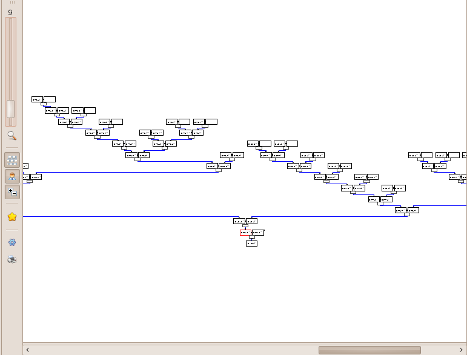
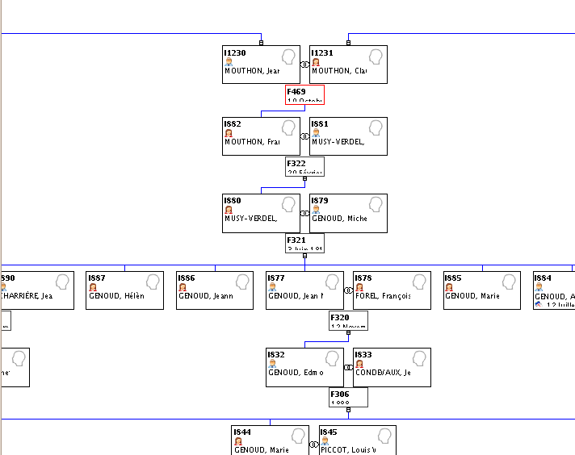
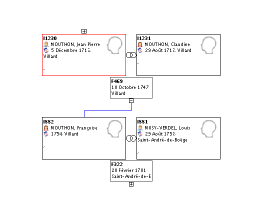

L'Arbre Généalogique

L'arbre généalogique est la vue qui permet le mieux de rendre compte des relations entre les personnes et entre les familles.
La vue se base sur la personne ou famille sélectionnée. Elle est matérialisée par le cadre rouge.
Lorsque l'arbre est trop grand pour être affiché en entier, des ascenseurs en bas et à droite permettent de se déplacer sur la totalité de l'arbre.
L'arbre permet de naviguer via les liens familiaux.
A partir d'un individu ou une famille selectionné(e), vous pouvez voir :
- tous les couples d'ascendants,
- son (un seul des) conjoint(s),
- et tous leurs descendants :

Pour voir les frères et soeurs d'un individu, vous pouvez donc sélectionner leurs parents.
Il est possible d'afficher/masquer des branches ascendantes ou descendantes en cliquant sur les "poignées" [+] / [-] :

La sélection d'une famille ou individu dans cette fenêtre, met à jour les données affichées dans les autres fenêtres:
L'arbre visualisé peut être imprimé (via le menu à gauche).
Il peut aussi faire l'objet d'un export informatique :
(utile pour envoyer une partie de votre fichier à d'autres généalogistes)
- En allant dans le menu général d'Ancestris :
Cliquez sur "Fichier", puis "Sauvegarder sous"
Dans la partie droite de la fenêtre affichée, sélectionnez l'onglet "filtrer par vue".
Cliquez sur la case de la proposition affichée : "xx nodes trouvés".
Dans la partie gauche, sélectionner le dossier dans lequel enregistrer le fichier.
N'oubliez pas d'indiquer le nom du fichier exporté.
L'export est terminé!
Le nouveau fichier est déjà disponible dans la fenêtre de centre de contrôle
Cette vue permet d'utiliser le
menu contextuel
Ce menu est disponible par un clic droit.
En plus du menu habituel, une option supplémentaire y est ici disponible :
En cliquant dans le vide, vous pouvez définir la personne racine de votre arbre.
Cela base l'arbre sur la personne sélectionnée dans la liste de toutes les personnes de votre fichier.
En cliquant sur un individu ou une famille, vous pouvez créer un signet.
- Les signets sont un moyen d'atteindre très rapidement des individus ou familles.
-
Pour créer un signet :
Sélectionnez "Ajouter un signet"
Un nom de signet modifiable est proposé.
Votre signet est créé!
Liste des différents outils disponibles dans le menu à droite:
Toutes les modifications apportées à cette liste peuvent être validées (bouton "appliquer") ou abandonnées (bouton "rétablir" ou directement "fermer").
- Réglage du zoom
- Affichage/masquage de la fenêtre d'aperçu général de l'arbre (taille modifiable en en faisant glisser le coin)
- Affichage vertical ou horizontal de l'arbre
- Affichage par couple ou par individu (conjoint masqué)
- Affichage/masquage des poignées [+]/[-] qui permettent d'afficher/masquer des branches de l'arbre
- Accès aux signets créés.
Quelque soit l'endroit où vous naviguez, vous pouvez, par ce biais, les atteindre en 1 clic.
- Réglages de nombreux paramètres :
- Onglet "généraux" :
- Cadres : Traçage des liens en lignes brisées ou lignes directes
- Antialiasing : Affichage normal ou lissage
- Ajustement ou non de la taille des fontes
- Affichage ou non du symbole d'union
- Diverses options pour personnaliser l'affichage graphique des informations : largeurs, hauteurs, espacements
- Onglet "couleurs" :
- Personnalisation des couleurs des liens, des cadres et de l'arrière-plan
- Onglet "signets" :
- Onglet "structure des cadres" :
- Personnalisation des informations inscrites dans les cadres : les calques
Attention toutefois à ne pas trop détailler les informations à afficher : cela demanderait, avec un grand nombre de familles et individus contenus dans votre fichier, beaucoup de ressources de la part de l'ordinateur et ralentirait l'affichage
- Impression :
- Onglet "imprimante" : Prévisualisation de l'impression et lien vers le paramétrage de la qualité impression